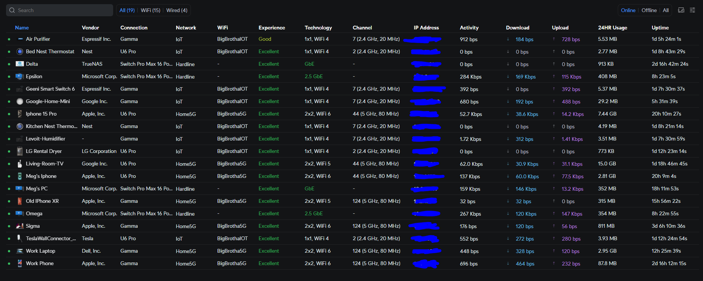
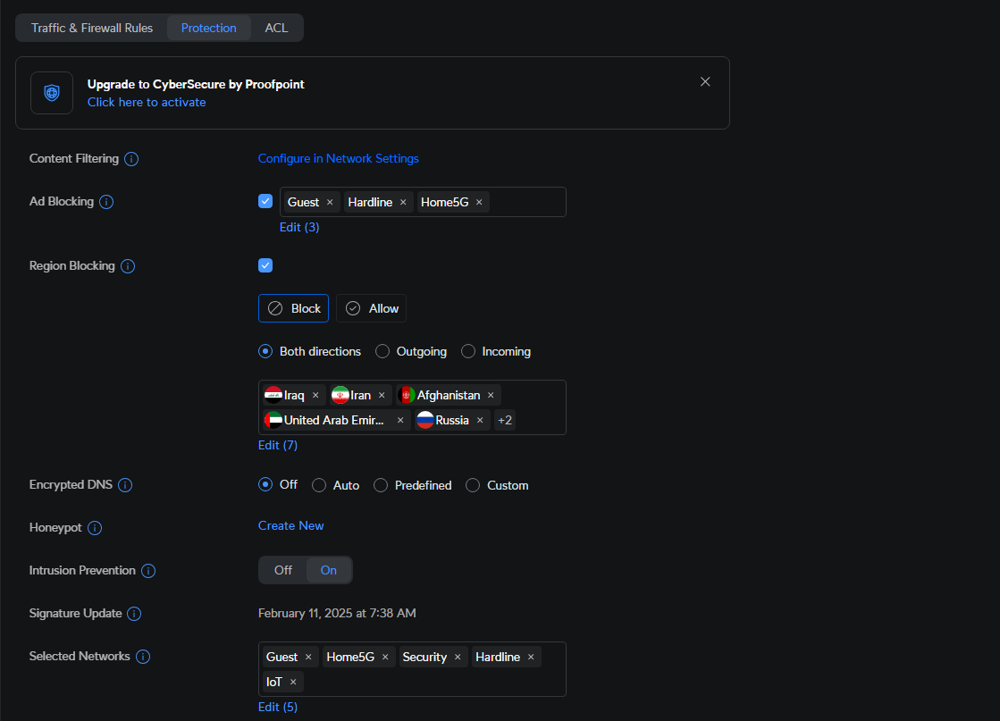

Project Details

The following displays how the network flows in my home. I wanted to say that while Ubiquiti
is considered pro-sumer grade equipment especially with the price tag,
I have had zero complaints about the performance and reliability of the equipment.
With that being said, I have the following equipment in my home network:
Unifi Dream Router, Switch Pro Max 16, Switch Lite 8 PoE, G5 Flex, and U6 Pro.
How the network is setup is that the Comcast internet is recieved by my Motorola Mb8611 DOCSIS.3.1 modem.
After that I attach the modem to my Unifi Dream Router with a CAT6 cable.
The Router is the main router that controls the network and is the DHCP server.
The Router acts also as a wifi emitter and connects my wifi devices using my IoT, Guest, and Main 5Ghz VLANs.
The Router can input 2.5Gbps and outputs 2 1Gbps ports and 2 1Gbps PoE ports.
The Router is connected to the Switch Pro Max 16 with a CAT6 cable.

The Switch Pro Max 16 is the main switch that connects all the other switches and access points.
I can assign specific VLANs to specific ports on the Switch Pro Max 16. Each port inputs and outputs
at a speed of 2.5Gbps. The fun feature of this device is that you can assign colors to the ports, for example
I set ports going 2.5Gbps to be blue and ports going 1Gbps to be green.
The Switch Pro Max 16 is connected to the Switch Lite 8 PoE, The Omega and Epsilon PCs, and my Truenas Server
with CAT6 cables. My girlfriend's PC and the Switch Lite 8 PoE are connected via Cat 5E cables.
The Switch Lite 8 PoE is a switch that has 4 PoE ports and 4 non-PoE ports. The ports run at 1Gbps.
The Switch Lite 8 PoE is connected to the G5 Flex and the U6 Pro with CAT6 cables.
The U6 Pro is a wifi emitter that connects my wifi devices using my IoT, Guest, and Main 5Ghz VLANs.
There are two pieces of software managing the network. The first being the Unifi Controller that manages
all the Unifi devices. I can monitor network traffic, create VLANs, wifi networks, rename devices, assign static IPs, remove offline
devices off the network, assign specific VLANs to specific router or switch ports,
optimize radios for better signal, and assign accounts for others to view or manange with in a
bigger production setting.
You can run firewalls and protections for your network. From ad blocking to geo-blocking,
vunerability detection, Traffic and Firewall Rules, port forwarding, and VPNs. Currently I'm a novice
when it comes to setting up network protection but I've learned a simple set up to
block ads while accepting certain google ads so my girlfriend can still accept certain links when searching,
exclude potential vunerabilities, and block certain countries from accessing my network.

The other piece of software is Unifi Protect. On this application I can see my camera feeds live
and recorded. I can set up motion detection, alerts, and recording schedules.
I currently don't own an NVR, but my router has a built in NVR, which I added another
500gb Sd card that for now with one camera, will be ok. But in the long run when I move I will
purchase or build an NVR to store all the camera feeds especially when I add more cameras.